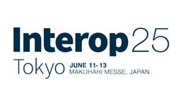
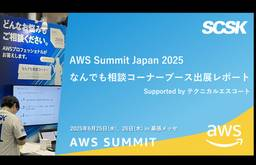
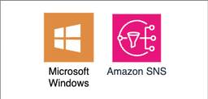

TechHarmony
https://blog.usize-tech.com
TechHarmonyは、SCSK株式会社が運営するエンジニアブログです。SCSKのエンジニア自らがクラウドを中心としたナレッジを積極的にアウトプットすることで社会への還元を行うとともに、更なるスキルアップを目指します。
フィード

LifeKeeper ARK の導入事例を紹介＜Oracle編＞
TechHarmony
こんにちは、SCSKの前田です。 私が携わった LifeKeeper の案件で導入を行った ARK について紹介をかねてお話したいと思います。 今回は、Oracle 編と言うことで、Oracle 社が開発・販売されている […]
1日前
LifeKeeper基本運用操作（コマンド編）
TechHarmony
みなさん、こんにちは。 SCSK株式会社の津田です。 今回は前回に引き続きLifeKeeper運用での基本的操作をご紹介します。 LifeKeeperではGUIとコマンドでの操作が可能です。 本記事ではコマンドでの操作を […]
3日前

Zabbixにセキュリティパッチは無い？Zabbixにおける脆弱性対応とマイナーバージョンアップの方法
TechHarmony
SCSKの坂木です。 本記事では、Zabbixにおける脆弱性の対応方法について紹介いたします。 セキュリティパッチとバージョンアップ システムの脆弱性は、常にセキュリティ上の脅威です。脆弱性情報（CVE）が […]
3日前

Interop Tokyo 2025 参加レポート
TechHarmony
こんにちは、SCSK株式会社 櫻本です。 2025/6/11-13に幕張メッセで開催されたInterop Tokyo 2025に参加しました。 Interop Tokyoは、ネットワーク・AI・クラウド・セキュリティなど […]
4日前

【出展レポート】AWS Summit Japan 2025にて『テクニカルエスコート』がなんでも相談コーナーを実施！！
TechHarmony
皆さんこんにちは。UGです。 6月25日（水）、26日（木）に開催されたAWS Summit Japan 2025に出展しました。 【近日開催！】AWS Summit Japan 2025「AWSで、夢ある未来を共に創る […]
5日前

LifeKeeper基本運用操作（GUI編）
TechHarmony
みなさん、こんにちは。SCSK株式会社の津田です。 今回はLifeKeeper運用での基本的操作をご紹介します。 LifeKeeper導入後の運用操作のイメージを持っていただけたらと思います。 LifeKeeperではG […]
5日前
Insight SQL Testing を触ってみた（第二回） 1
1
TechHarmony
こんにちは、石原です。 AWS上のデータベースのバージョンアップの際使用した「Insight SQL Testing」についてご紹介する内容の第二弾になります。 こちらはインサイトテクノロジー社が提供している製品になりま […]
5日前
【イベントレポート】AWS GameDayに参加しました！！
TechHarmony
みなさま、こんにちは！ 最近笑いすぎてそろそろ腹筋が割れそうです。いとさんです。 先日目黒にてJapan AWS Top Engineers GameDay が開催されました。 社内のJapan AWS Top Engi […]
5日前
Reserved Instances完全に理解した
TechHarmony
SCSK 永見です。 Reserved Instance、コスト削減の話になると、よく出てきます。 これらを詳しく知ろうとして調べても、詳細な説明に終始して、そもそも何なの？というのがよくわからず困った記憶があります。 […]
6日前
Savings Plans完全に理解した
TechHarmony
SCSK 永見です。 Reserved Instance、Savings Plans。 コスト削減の話になると、よく出てきます。 これらを詳しく知ろうとして調べても、詳細な説明に終始して、そもそも何なの？というのがよくわ […]
6日前

Windowsにおける管理者権限への昇格操作をAmazon SNSで通知する
TechHarmony
こんにちは、ひるたんぬです。 最近は暑い日が続いていますね。私はこの時季になると冷房が欠かせないものとなっています。 世間では「春と秋がどんどん短くなっている」と言われており、私もそう思っていたのですが、具体的にどれだけ […]
6日前

Ansibleを使用してNW機器設定を自動化する（PaloAlto-サービス編①）
TechHarmony
はじめに 当記事は、日常の運用業務（NW機器設定）の自動化により、運用コストの削減 および 運用品質の向上 を目標に 「Ansible」を使用し、様々なNW機器設定を自動化してみようと 試みた記事です。 Ansibleは […]
9日前
Interop Tokyo 2025で見つけた個人的注目技術
TechHarmony
こんにちは。SCSKの青木です。 Interop Tokyo2025の2日目に参加してきました。 参加したセッションや見に行った展示について感想を書こうと思うので、気になるものがあればぜひ読んでください。 Interop […]
9日前
AWS CDKで OS パッチ適用の自動化を実装してみた
TechHarmony
今回は、前回投稿した「OSパッチ適用を自動化させた後、結果をメールに通知させる方法」をAWS CDKで実装する方法をまとめました。 AWS Systems Manager の Patch Manager で […]
9日前
Zabbix7.4新機能検証（icmppingretry編）
TechHarmony
こんにちは、SCSK株式会社の小寺崇仁です。 先日Zabbixの7.4がリリースされました。今回はicmppingretryについて検証したいと思います。 7.4の新機能につきましては、公式HPに記載がございます。 Wh […]
9日前
LifeKeeper ARK の導入事例を紹介＜JP1/AJS3編＞
TechHarmony
こんにちは、SCSKの前田です。 私が携わった LifeKeeper の案件で導入を行った ARK について紹介をかねてお話したいと思います。 今回は、日立製作所から提供されているジョブ管理製品である JP1/AJS3 […]
10日前
【ServiceNow】Knowledge25への参加記録！！その３ ～開幕～
TechHarmony
こんにちは！ SCSK株式会社 小鴨です。 海外にあこがれはあるけど英語は全くできないことが悩みです そんな自分ですが、今日も Knowledge 25 のご紹介をさせていただきます！！ 本日からはいよいよイベント本番の […]
11日前
Interop Tokyo 2025 参加レポート
TechHarmony
こんにちは。SCSK 武田です。 先日、幕張メッセにて開催されたInterop Tokyo 2025に参加してきました。 主に生成AIに関するセッションや展示ブースを回ってきたので印象に残った内容をご紹介します。 印象に […]
11日前
【イベントレポート】Interop Tokyo 2025
TechHarmony
こんにちは。SCSK株式会社 中村です。 Interop（インターロップ）とは、主にネットワークコンピューティング分野における最新技術やビジネス動向を体験できる展示会やイベントのことです。特に「Interop Tokyo […]
12日前
Google Cloud Next Tokyo へ出展のお知らせ
TechHarmony
皆さん、こんにちは！SCSK株式会社の大野です。 今年も、Google Cloudが主催するグローバルカンファレンスイベント「Google Cloud Next Tokyo」が開催されます！このイベントは、クラウドテクノ […]
12日前
【初心者向け】IAMとはすなわちサンタクロースである
TechHarmony
SCSK永見です。 IAMとは、AWS リソースへのアクセスを安全に管理するための認証・認可を司るサービスです。 なのでAWSサービスを使う以上、IAMの理解は避けては通れません。 そこで今回は、初めてIAMに触れる方へ […]
12日前
CatoクラウドのPoC構成について
TechHarmony
現在、新しいサービスを導入する際には、事前にPoC（概念実証）を行うことが一般的となっています。 PoCの目的は、採用を検討するサービスを比較するために実際にサービスを体験してみる事だったり、採用の最終確認だったり、と状 […]
12日前
GCPのVMインスタンス(パブリックWebサイト)のモニタリング方法
TechHarmony
こんにちは。SCSKの磯野です。 Google CloudのVMで、外部に公開するようなWebサイトを運用している場合、該当のWebサイトの死活監視を行うためのモニタリングが必要となります。 今回は、VMで稼働しているパ […]
12日前
Dataformのアサーション出力先を環境ごとに変える方法
TechHarmony
こんにちは。SCSKの磯野です。 Dataformでは、環境ごとに異なるプロジェクトにテーブルをリリースすることができます。 Dataformで複数プロジェクトかつ複数環境にリリースする方法Dataformで、同一のSQ […]
12日前
Dataformのアサーションを増分ロジックで実装する方法
TechHarmony
こんにちは。SCSKの磯野です。 Dataformにはアサーションという機能があります。 アサーションを使用してテーブルをテストする | Dataform | Google CloudDataform コアを使用 […]
12日前
ServiceNowを使って社内ハッカソンを開催しました!
TechHarmony
こんにちは、SCSK吉田です。 先日6月下旬、社内勉強会の一環としてServiceNowを使った社内ハッカソンを開催しました！ 今回は社内ハッカソンの開催レポートとなります。 はじめに 社内でハッカソンを実 […]
16日前
【ServiceNow】Knowledge25への参加記録！！その２ ～イベント開始～
TechHarmony
こんにちは！ SCSK株式会社 小鴨です。 最近はひどく暑いですね 正直ラスベガスの方が涼しかったです（笑） そんな自分ですが、今日も Knowledge 25 のご紹介を始めます！！ 前回の記事は準備・到 […]
18日前
Cortex Cloud の REST API を使用してみた
TechHarmony
今回は Prisma Cloud ではなく、Cortex Cloud の API を使用してみようと思います。 Cortex Cloud は2025年度第3四半期後半に一般提供される予定のサービスです。 本記事では、Co […]
18日前
Catoクラウド ユーザーコミュニティ「Cato Circle」を発足しました！
TechHarmony
この度、Catoクラウドのユーザーコミュニティ（ユーザ交流会、ユーザ会）、「Cato Circle（ケイトサークル）」を発足いたしました。そして、Cato Circle についての記念すべき初投稿記事となります。 &nb […]
18日前
Dataformで使用しているGitHubリポジトリ名を変更してみた
TechHarmony
こんにちは。SCSKの磯野です。 Dataformでは、リモートリポジトリをGitHubリポジトリと接続することができます。 Dataformに接続済みのGitHubリポジトリの名称を変更したくなったので、どのような影響 […]
18日前
【CSPM】Prisma Cloudの監査ログをAWSへ外部保管する
TechHarmony
Prisma Cloudはパブリッククラウドやアプリケーションのセキュリティ強化に役立つツールですが、Prisma Cloud自身のセキュリティも考慮する必要があります。例えば、Prisma Cloudの監査ログは適切に […]
18日前
ServiceNowでの多要素認証(MFA)からの除外方法について
TechHarmony
初めまして。 SCSKの吉田拳多です。 今回はServiceNowにおける多要素認証(MFA)の認証方法と、多要素認証(MFA)の除外設定について紹介したいと思います。 本記事は執筆時点(2025年6月)の情報になります […]
19日前
【出展レポート】AWS Summit Japan 2025でAIエージェントのデモを行いました！
TechHarmony
こんにちは。SCSK梅ヶ谷（うめがたに）です。 6月25日（水）、26日（木）に開催されたAWS Summit Japan 2025に出展しました。 今回、SCSKはプラチナスポンサーとして、スポンサーセッションでの事例 […]
19日前
AIを使ってWordPressのアコーディオンパネルをつくる（プラグイン不使用）
TechHarmony
こんにちは！最近倒立で腕立て伏せを試みようと頑張っております、いとさんです。 初めての投稿はgpt-4oとGeminiを使用したWordpress内のアコーディオン実装の工程、成果物を紹介いたします。 基本となるコードは […]
19日前
かわいいゲームをAmazon Q CLIで作る
TechHarmony
本記事は「Amazon Q CLI でゲームを作ろう Tシャツキャンペーン」に向けて執筆した記事です。 こんにちは。最近はサクレパインとガリガリくんが美味しいです。いとさんです。 今回は、滑り込みでAmazon Q CL […]
19日前
【ServiceNow】更新セットプレビュー時のエラー
TechHarmony
こんにちは。SCSKの北川です。 今回はServiceNowの更新セットプレビュー時のエラー対応についてまとめました。 更新セットの移送手順はこちら【ServiceNow】更新セット移送の基本ガイド – TechHarm […]
23日前
【Prisma Cloud】Application Securityを有効化できない時の対処法
TechHarmony
本記事は、Prisma CloudのApplication Securityがサブスクリプションの一覧に表示されず、Application Securityを有効化できない人に有効化する方法をお伝えする記事となっています […]
23日前
MackerelでOracle Databaseを監視してみた
TechHarmony
こんにちは、SCSKの嶋谷です。 これまでに3度SaaS型監視サービスMackerelに関する記事を投稿してきた結果、先日Mackerelアンバサダーを拝命いたしました。今後もアンバサダーとしてMackerelを広めてい […]
23日前
【ServiceNow】一番シンプルなクローン方法
TechHarmony
初めまして。星です。 ServiceNowのクローンのやり方について説明させていただきます。 クローンという方法ひとつ取ってもやり方は様々です。 ここには書かれているのは手法の一つであることにご注意ください。 なぜクロー […]
23日前
【ServiceNow】ナレッジ記事のテンプレートを作成する
TechHarmony
こんにちは SCSKの酒井です。 ServiceNowのナレッジ機能にて、テンプレートを作成する機会があったので、その方法を紹介させていただきます。 本記事は執筆時点（2025年6月）の情報です。最新の情報は製品ドキュメ […]
23日前
【CSPM】Prisma Cloudの権限制御とカスタム権限グループの解説
TechHarmony
本記事ではPrisma Cloudのユーザ権限制御方法と、そこで利用できるカスタム権限グループについて解説します。カスタム権限グループに割り当てることができる権限の一覧も載せていますので、これからPrisma Cloud […]
25日前
【CSPM】Prisma Cloud Release Notesで更新があった機能を紹介（2025年5月）
TechHarmony
はじめに Prisma Cloudでは月に一回アップデートがあります。 内容としては新機能のリリース情報やUI変更のお知らせからAPIの更新情報など多岐にわたりますが、今回は2025年5月に機能更新がいくつかあったので、 […]
25日前
切れ味、使い心地、文句なし！ AWS Summit Japan 2025 SCSKブースのマル秘ノベルティ「貝印の爪切り」をゲットしよう
TechHarmony
こんにちは、SCSK伊藤です。 いよいよAWS Summit Japan 2025が今週となりました。 水曜日は雨天の予報も出ておりますが、足元にお気をつけて幕張メッセにお越しくださいませ。 今年のSCSKの出展内容は以 […]
1ヶ月前
【ServiceNow】注文ガイドの実行順序
TechHarmony
こんにちは SCSKの庄司です。 前回、ServiceNowの注文ガイドの基本機能についてご紹介いたしました。 【ServiceNow】注文ガイドの基本注文ガイドとは、複数のアイテムを生成する1つのサービスカタログ要求を […]
1ヶ月前
Amazon Q Developer Proをメンバーアカウントで使うには
TechHarmony
SCSK 永見です。 Amazon Q Developerはコード生成などに活用できるAIサービスです。 有料版であるQ Developer Proは、IAM Identity Center(以下、IIC と記載します) […]
1ヶ月前
【Azure】Log Analytics ワークスペース上から /var/log/wtmp のログを表示させると文字化けする問題の対処法
TechHarmony
/var/log/wtmp を Log Analytics ワークスペースにそのまま取り込もうとすると、文字化けが発生します。 ネット上に情報が無く、サポートに問い合わせて解決に至りましたので、小ネタですが誰かの助けにな […]
1ヶ月前
【エンジニアでなくても簡単に試せる】生成AIで社内ガイドライン検索を実現【Amazon Bedrock】
TechHarmony
「Amazon Bedrock」を使って、サクッと社内ガイドラインの検索システムを構築していきます。APIやpythonとかはよくわからないけど、簡単に生成AIアプリケーションを試してみたい人はぜひ参考にしていただければ […]
1ヶ月前
HAクラスター/LifeKeeper用語説明4
TechHarmony
こんにちは、SCSKの前田です。 4回目は、LifeKeeperの内部で使われている用語について説明したいと思います。 1回目・2回目・3回目の用語説明に関しては以下のリンクからどうぞ！ HAクラスター/LifeKeep […]
1ヶ月前
HULFT10 × LifeKeeper セミナー開催レポート
TechHarmony
4月16日にセゾンテクノロジーとSCSKの共催による”HULFT10 × LifeKeeper セミナー”を開催いたしました。 今回は、講演内容の概要とセミナーの様子についてご紹介していきます。 セミナー概 […]
1ヶ月前
【Catoクラウド】イベントログ（Events）確認方法・2025年版
TechHarmony
Catoクラウドは、マネジメントコンソール（CMA）上の「Events」ページから一通りのイベントログを確認できます。 以前の記事が執筆された2023年8月と比べると、2025年6月現在は主に以下のような新機能が追加され […]
1ヶ月前